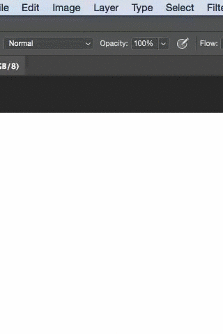
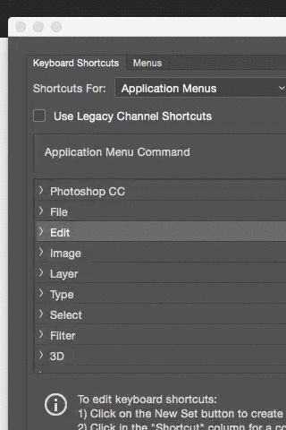

MENU > EDIT
Go all the way down to Keyboard Shortcuts... a new window will open.

STEP 2
make sure the keyboard shortcuts tab is selected.
Under the application menu command, find and click on EDIT
the EDIT drop down will open, you'll see keyboard shortcut names such as UNDO.

STEP 3
go to STEP BACKWARD. next to it is the corresponding shortcut. click on it and now enter the desired shortcut command.
in the example I simply used CMD+Z (MAC).
press accept, then okay, and now you're set! (or you can bypass this by just pressing ENTER on your keyboard).
A history state is a change during your working session.
By default, the history panel lists the previous 20 states. Older states are automatically deleted to free more memory for Photoshop. You can keep a particular state throughout your work session by making a snapshot (a different tutorial).
why change the history states?
Usually for convenience; when working on larger projects, it’s more likely that we’ll be doing multiple small changes so having that option to go back further than the default is good.